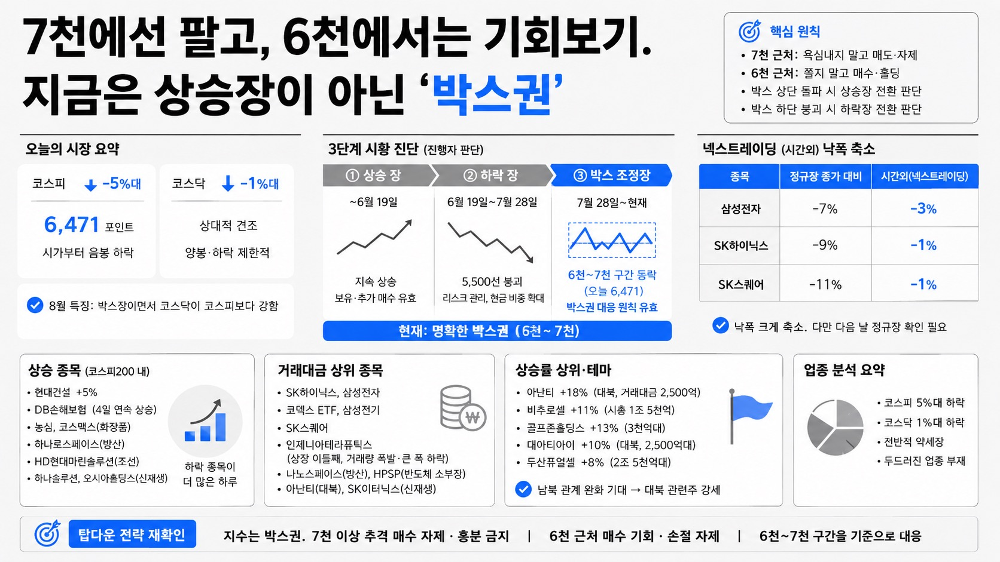

슈퍼개미 이세무사TVMORNING DIGEST · 2026-08-20 · 슈퍼개미 이세무사TV🎬 영상
7천에선 팔고, 6천에서는 기회보기. 지금은 상승장이 아닌 '박스권

01핵심 개요
항목
내용
형식
슈퍼개미 이세무사TV의 일일 장 마감 브리핑. 진행자가 당일 지수 흐름과 탑다운(지수→업종→종목) 분석을 전달한다.
화자
이세무사(슈퍼개미 이세무사TV 대표)
핵심 문제의식
코스피가 5%대 급락한 날, "지금은 상승장이 아니라 박스권"이라는 기존 전략이 다시 유효했음을 복기하고, 향후에도 7천 근처에서는 욕심내지 말고 6천 근처에서는 쫄지 말라는 대응 원칙을 강조.
핵심 내용
6월 19일까지 상승장 → 7월 28일까지 하락장(5,500 붕괴) → 이후 박스 조정장(6천~7천)이라는 3단계 시황 진단. 오늘 코스피는 6,471까지 밀렸고 코스닥은 상대적으로 견조했다.
실증 사례
코스피가 종가 기준 삼성전자 -7%, SK하이닉스 -9%, SK스퀘어 -11%까지 빠졌다가 넥스트레이딩(시간외) 시장에서 각각 -3%, -1%, -1%로 낙폭을 줄임. 대북 관련주(아난티 등)가 남북 관계 완화 기대로 강세.
전략 요지
박스권 상단(7천 부근)에서는 추격 매수 자제, 하단(6천 부근)에서는 손절매하지 말고 매수 기회로 접근. 박스 상·하단이 뚫릴 때만 추세 전환 판단.
02핵심 기능/내용 구조
전일 전략 복기: 진행자는 "7천 넘어가면 더 살 필요 없다"는 기존 주장이 이번 하락으로 다시 맞아떨어졌다고 언급하며, 어제 7천 근처에서 매도한 시청자는 전략에 공감해 잘 대응했고, 매수한 시청자는 전략에 공감하지 못해 물렸다고 정리한다.
말복 치킨 이벤트 관련 안내: 본편 시황 분석에 앞서, 약 950명에게 치킨(예산 약 2,500만 원)을 지급하는 구독자 이벤트가 진행 중임을 안내하고, 이벤트 지연에 불만을 제기하는 일부 댓글에는 지급 대상에서 제외하겠다고 언급한다. (시황 분석과 직접 관련 없는 채널 운영 코너)
오늘의 지수 현황: 코스피는 6,471포인트까지 밀리며 시가부터 음봉(하락)으로 시작. 최근 8월 들어 양봉보다 음봉이 훨씬 많아, 강한 상승장이 아니라는 신호로 해석된다.
3단계 시황 진단: (1) ~6월 19일: 상승장, (2) 6월 19일~7월 28일: 하락장(5,500선 붕괴), (3) 7월 28일(바닥 확인)~현재: 박스 조정장(약 6천~7천 구간)이라는 자신의 기존 판단을 재확인. 7월 28일을 정확히 바닥으로 지목했던 콜이 적중했다고 강조한다.
박스권 대응 원칙: 지수가 셋 중 하나(상승장·하락장·박스장)에 있다는 전제 아래, 현재는 박스장이므로 상단(7천 부근)에서는 욕심을 내지 말고, 하단(6천 부근)에서는 쫄지 말라는 원칙을 제시한다. 박스 하단이 깨지면 다시 하락장, 박스 상단을 뚫으면 다시 상승장으로 국면 전환을 판단해야 하지만, 현재는 아직 그 판단을 할 필요가 없는 명확한 박스권 국면이라고 진단한다.
코스피-코스닥 온도차: 코스피는 5%대(음봉) 하락한 반면 코스닥은 1%대(양봉) 하락에 그쳐 상대적으로 견조했다. 8월의 특징으로 "박스장이면서 코스닥이 코스피보다 강하다"는 점을 짚는다.
좁은 박스 범위 제시: 대략 6천~7천을 박스 범위로 보되, 오늘 지수(6,471)는 다시 박스 저점 쪽으로 내려가는 흐름이라 과도하게 위축될 필요가 없다고 진단한다. 빠르면 내일이나 이번 주, 다음 주 중 반등 가능성을 열어둔다.
넥스트레이딩(시간외) 반등: 삼성전자·SK하이닉스·SK스퀘어가 정규장 종가 대비 크게 빠졌지만(각각 -7%, -9%, -11%), 시간외 거래에서는 낙폭이 -3%, -1%, -1%로 크게 줄었다. 다만 다음 날 정규장을 다시 확인해야 한다는 단서를 붙인다.
코스피200 상승 종목: 현대건설(+5%), DB손해보험(4일 연속 상승, 보험주 강세), 농심(하락장에서도 견조), 코스맥스(화장품), 하나로스페이스(방산), HD현대마린솔루션(조선), 하나솔루션(신재생), 오시아홀딩스(신재생) 등이 상승했으나, 코스피200 전체로는 하락 종목이 훨씬 많은 하루였다.
거래대금 상위 종목: SK하이닉스, 삼성전자, 코덱스 ETF, 삼성전기, SK스퀘어 등이 상위권을 차지했고, 상장 이틀째인 인제니아테라퓨틱스는 거래량은 터졌지만 큰 폭 하락. 나노스페이스(방산), HPSP(반도체 소부장), 아난티(대북 관련주, 5천억대 시총에 거래대금 2,500억), SK이터닉스(신재생) 등이 언급된다.
상승률 상위 종목과 대북 테마: 아난티(+18%, 거래대금 2,500억)를 비롯해 남북 관계 완화 기대로 대북 관련주(인디에나, 조비, 부산업 등)가 강세를 보였다. 비추로셀(1조5천억 시총, +11%), 골프존홀딩스(3천억대, +13%), 대아티아이(2,500억대, +10%, 대북 관련주), 두산퓨얼셀(2조5천억대, +8%) 등이 거론된다.
업종 분석 요약: 코스피 5%대 하락, 코스닥 1%대 하락이라는 전반적 약세장 속에서 특별히 두드러진 업종은 없었다고 정리한다.
탑다운 전략 재확인: 지수는 박스권이므로 7천 이상에서는 추격 매수를 자제하고 흥분하지 말 것, 6천에 가까워지거나 깨지더라도 쫄지 말고 손절매하지 말 것을 재차 강조하며 6천~7천 구간을 기준으로 대응하라고 마무리한다.
강연회·이벤트 홍보: 이번 주 토요일 부산 강연(마감), 9월 부산 강연 예정, 다음 주 토요일 오상공원(연구이사)·몽당연필(연구본부장)의 단기매매 콜라보 강의, 대구·대전·광주 등 지방 강연 일정을 안내하며 마무리한다.
03시장/정책 맥락
이번 급락은 특정 정책 이벤트보다는 그간 과열됐던 반도체 대형주(삼성전자·SK하이닉스)의 되돌림과 시장 전반의 변동성 확대가 맞물린 결과로 해석된다. 정규장에서 큰 폭 하락했던 반도체 대형주가 시간외 거래에서 낙폭을 크게 줄인 점은 저가 매수세 유입 가능성을 시사하지만, 다음 날 정규장 개장가를 확인해야 한다는 신중론이 함께 제시된다. 대북 관련주의 강세는 남북 관계 완화 기조에 대한 시장의 기대感이 반영된 테마성 움직임으로, 펀더멘털보다 이벤트 기대에 의존하는 단기 수급 성격이 강하다. 전반적으로 8월 들어 코스피 등락이 커지며 뚜렷한 방향성 없이 6천~7천 구간에서 박스권을 형성하고 있다는 진단이 이 영상의 핵심 프레임이다.
04전략적 의미
첫째, "지수는 상승장·하락장·박스장 셋 중 하나"라는 단순 분류법은 개인 투자자가 매 순간 복잡한 판단을 내리기보다, 현재 국면에 맞는 단순한 대응 원칙(박스 상단에서는 매도, 하단에서는 매수 또는 홀딩)을 따르게 함으로써 감정적 매매를 줄이는 실용적 프레임워크다. 둘째, 박스권 하단 붕괴 시 하락장 전환, 상단 돌파 시 상승장 전환이라는 전환 판단 기준을 미리 설정해두면, 국면이 바뀌는 시점을 사후적으로나마 빠르게 인지해 대응할 수 있다는 점에서 리스크 관리에 유용하다. 셋째, 코스피가 5% 급락하는 동안 코스닥이 1% 하락에 그친 점은 대형 반도체주 쏠림이 완화되고 있다는 신호로, 포트폴리오 분산의 필요성을 시사한다. 넷째, 대북 관련주처럼 이벤트·테마성 강세 종목은 펀더멘털이 아닌 뉴스 기대감에 의존하므로, 단기 트레이딩 관점에서 접근하되 장기 투자 근거로 삼기엔 리스크가 크다는 점을 유의해야 한다.
05핵심 워크플로우 또는 비교표
국면
기간(진행자 판단)
코스피 특징
대응 전략
상승장
~6월 19일
지속 상승
보유·추가 매수 유효
하락장
6월 19일~7월 28일
5,500선까지 붕괴
리스크 관리, 현금 비중 확대
박스 조정장
7월 28일~현재
6천~7천 구간 등락 (오늘 6,471)
7천 근처 매도·욕심 자제, 6천 근처 매수·손절 자제
종목/시장
정규장 낙폭
시간외(넥스트레이딩) 낙폭
삼성전자
-7%
-3%
SK하이닉스
-9%
-1%
SK스퀘어
-11%
-1%
06활용 시나리오
박스권 장세에서 갈피를 못 잡는 개인 투자자: 지수가 급등락할 때마다 감정적으로 추격 매수·공포 매도하는 대신, "7천 넘으면 자제, 6천 깨져도 쫄지 말자"는 단순 원칙을 매매 규칙에 반영해 일관된 대응을 할 수 있다.
반도체 대형주 비중이 큰 투자자: 삼성전자·SK하이닉스가 정규장에서 급락했다가 시간외에서 낙폭을 줄이는 패턴을 참고해, 다음 날 개장가를 확인한 뒤 매매 타이밍을 재점검하는 데 활용할 수 있다.
테마주 단기 트레이더: 대북 관련주(아난티 등)처럼 이벤트 기대감으로 급등하는 종목을 발굴할 때, 시가총액 대비 거래대금 비율(예: 아난티 5천억 시총에 2,500억 거래)을 참고 지표로 활용할 수 있다.
코스피·코스닥 자산 배분을 고민하는 투자자: 급락장에서 코스닥이 코스피보다 상대적으로 견조했던 이번 사례를 참고해, 대형 반도체주 쏠림 리스크를 분산하는 포트폴리오 조정에 참고할 수 있다.
07현황 및 전망
진행자는 현재 코스피가 대략 6천~7천의 박스권에 갇혀 있으며, 이 범위를 벗어나는 뚜렷한 방향성이 나타나기 전까지는 박스 전략(상단 매도·하단 매수 또는 홀딩)을 유지해야 한다고 전망한다. 오늘 급락 이후 반도체 대형주가 시간외에서 낙폭을 줄인 점을 근거로, 빠르면 다음 날이나 이번 주, 늦어도 다음 주 중 반등 가능성을 열어두고 있다. 다만 박스 하단(6천)이 실제로 붕괴될 경우 하락장 재개로, 박스 상단(7천)을 돌파할 경우 상승장 재개로 판단을 전환해야 한다고 언급하며, 아직은 그 판단을 내릴 시점이 아니라고 결론짓는다. 대북 관련주 등 테마성 종목의 강세는 당분간 뉴스 흐름에 따라 변동성이 클 것으로 예상된다.